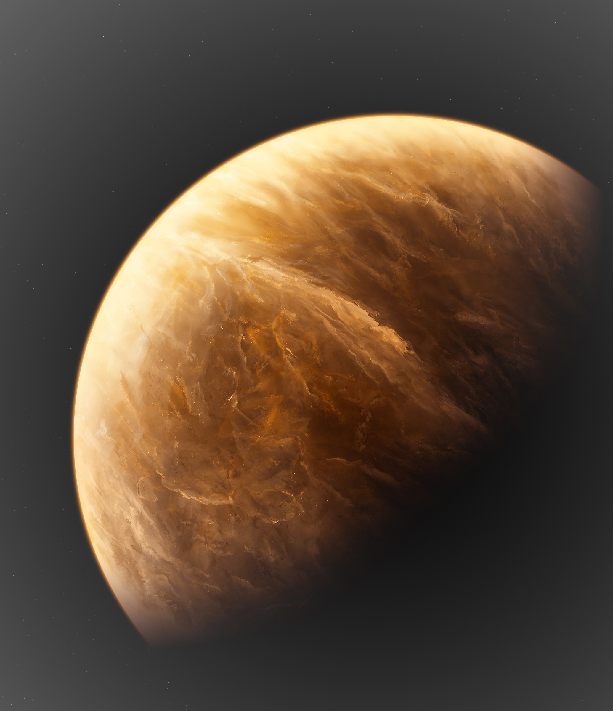

Venus
Venus is the second planet from the Sun. It is named after the Roman goddess of love and beauty. As the brightest natural object in Earth's night sky after the Moon, Venus can cast shadows and can be, on rare occasions, visible to the naked eye in broad daylight.
The similarity in size and density between Venus and Earth suggests they share a similar internal structure: a core, mantle, and crust. Like that of Earth, Venusian core is most likely at least partially liquid because the two planets have been cooling at about the same rate.
Much of the Venusian surface appears to have been shaped by volcanic activity. Venus has several times as many volcanoes as Earth, and it has 167 large volcanoes that are over 100 km (60 mi) across. The only volcanic complex of this size on Earth is the Big Island of Hawaii.
Venus's magnetic field to be much weaker than that of Earth. This magnetic field is induced by an interaction between the ionosphere and the solar wind,rather than by an internal dynamo as in the Earth's core. Venus's small induced magnetosphere provides negligible protection to the atmosphere against cosmic radiation.
The lack of an intrinsic magnetic field at Venus was surprising, given that it is similar to Earth in size and was expected also to contain a dynamo at its core. A dynamo requires three things: a conducting liquid, rotation, and convection. The core is thought to be electrically conductive and, although its rotation is often thought to be too slow, simulations show it is adequate to produce a dynamo. This implies that the dynamo is missing because of a lack of convection in Venus's core. On Earth, convection occurs in the liquid outer layer of the core because the bottom of the liquid layer is much higher in temperature than the top. On Venus, a global resurfacing event may have shut down plate tectonics and led to a reduced heat flux through the crust. This insulating effect would cause the mantle temperature to increase, thereby reducing the heat flux out of the core. As a result, no internal geodynamo is available to drive a magnetic field. Instead, the heat from the core is reheating the crust. One possibility is that Venus has no solid inner core, or that its core is not cooling, so that the entire liquid part of the core is at approximately the same temperature. Another possibility is that its core has already completely solidified. The state of the core is highly dependent on the concentration of sulfur, which is unknown at present.
| Mass | 4.8675×1024 kg |
|---|---|
| Rotation Period | 243.025 Earth Days |
| Surface Gravity | 8.87 m/s2 |
| Volume | 9.2843×1011 km3 |